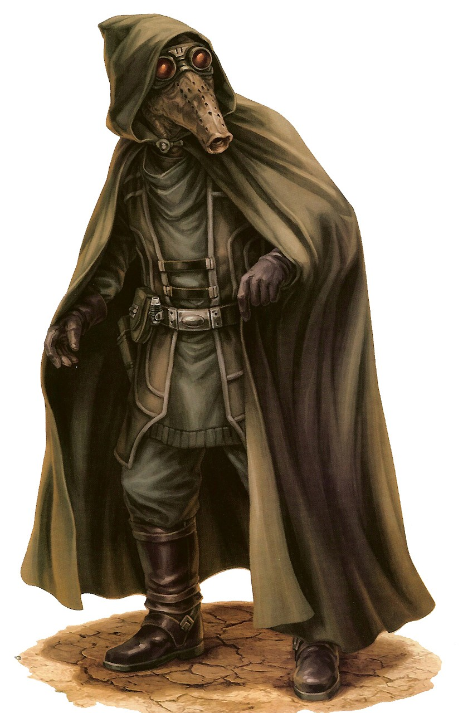

Kubaz
kubaz
Special Abilities: Kubaz begin the game with one free rank in Stealth or Survival. They still may not train Stealth or Survival above rank 2 during character creation.
Enhanced Vision: When making Ranged combat or Perception checks, Kubaz may remove up to imposed due to concealment or applicable environmental factors (but not defense).
Distinguished by their long snout and green-black skin as well as the whirling trill of their native tongue, the Kubaz flit from shadow to shadow. Their sensitive eyes observe what remains unseen by less perceptive species. Consummate pragmatists, the few Kubaz who travel beyond their homeworld of Kubindi do what is necessary to survive the dangers of life in Palpatine’s regime. Keen senses and a willingness to set aside moral obligations that burden other species cement their place as some of the most sought-after spies and informants on all sides of the Galactic Civil War.
The most distinctive trait of the Kubaz is the long snout that dominates their face. Contrary to common galactic perceptions, their sense of smell is no keener than that of most species. Instead, this snout is a natural evolution of the Kubaz and their unique insectivore diet. Kubaz are passionate about their food, making little distinction between common insects and sentient insectoids. This often leads to tension between Kubaz and insectoid species such as Geonosians, Melittos, and Verpine.
Most Kubaz keep their coarse hair cut short, its dark color accenting their green-black skin. Those traveling offworld typically wear protective lenses or goggles to shield their sensitive eyes, which are quite keen from generations of living in the twisting hive caverns of their homeworld. Contrary to what one might assume due to their strange appearance, Kubaz are mammalian, with body proportions and lifespans similar to those of humans.
Countless densely populated clans of Kubaz live in the winding caverns that burrow deep beneath the surface of Kubindi. These clans engaged in generations of tribal wars over the harvesting of the hives of the great insects that serve as their primary food source. Finally, through selective breeding and genetic manipulation, each clan was able to distinguish its insectoid livestock from that of neighboring clans. This led to a longstanding peace, which holds to this day. Diplomacy, cooperation, and the exchange of information accompanied this peaceful resolution, giving rise to general prosperity and scientific advancement. Before long, the Kubaz began exploring nearby planets in spacecraft considered primitive by galactic standards. Their starships were incapable of hyperspace travel, though particularly adventurous Kubaz began to establish colonies on several moons in the Ku’Bakai system.
Because the Kubaz never formally joined the Republic, they remained relatively unscathed during the horrors of the Clone Wars. By the time the Empire rose to power, the Kubaz had only recently developed ships capable of hyperspace travel. This cemented their place as a species in galactic society. Unfortunately, it would be the last great achievement of the Kubaz. The Empire saw little value in the Ku’Bakai system or its natives and looked the other way as they were claimed as the property of Hutt Space. Warring Hutt kajidics enticed Kubaz into their services with promises of wealth and power. The Kubaz, realizing the need to quickly adapt to the highly advanced galactic society beyond their native star system, readily accepted offers from Nar Shaddaa and other Hutt stronghold worlds.
Ever the pragmatists, the Kubaz now make every effort to ingratiate themselves with the highest bidder, and they have quickly proven themselves invaluable information brokers. The morality of working for ruthless gangsters and alongside hired killers matters little to them. They have survived the scorching heat of their homeworld and generations of civil war. The Kubaz respect survival and the ability to quietly endure above all things. As such, they make few judgments (even among their own people) about the actions and choices of other individuals. In fact, ethical questions and discussions about morality are considered to be a strange luxury reserved for other species. That is not to say that the Kubaz are malicious or perform evil acts for their own sake. They simply respect that each task put before an individual needs to be solved efficiently in order to advance in a given situation. Whether one’s employer is a Hutt crime lord, Imperial officer, or Rebel spy is of no concern. Each day reveals new secrets to a clever Kubaz, and each new secret is an opportunity to be exploited.
Located in the Outer Rim, Kubindi is a world burnt by its own sun. Great flares leap from its blue star and devastate the planet’s surface, making the planet uninhabitable to all but the hardiest of species. Most of its surface is dominated by blackened mountain ranges and seas of endless, windswept sand. Sandstorms can arise in an instant, choking the life out of any creature caught out in the open. Only swarms of massive carnivorous insects dare live aboveground, burrowing into the arid wasteland when the storms appear. Many natives regard these dangerous beasts as a delicacy. Clan rulers regularly hire hunting parties to brave the planet’s surface in an effort to recover them alive to be served as gourmet fare. The Kubaz dwell in tunnels so deep as to almost reach the planet’s core. In the pitch black far beneath the surface of Kubindi, they raise crops of genetically modified and marked insect larvae, which are a staple of the Kubaz diet and a necessity for survival.
Few offworld traders visit Kubindi, as it has little to offer the galactic market and remains under the protection of the Hutts. However, some of the moons of the Ku’Bakai system have established colonies that host clans of Kubaz. These outposts are hotbeds of information and illicit secrets. Due to the presence of the Hutts, however, it is difficult to separate truth from rumor, both of which pass freely between whispering travelers and pragmatic natives.
Though most Kubaz understand Basic, they are unable to speak it. Their native tongue, Kubazian, is subtle and complex, combining shrill squeaks and whistles with the almost imperceptible snout motions so common among the Kubaz. Very few outsiders are capable of speaking Kubazian, but those who do earn a measure of respect for their efforts.
Kubaz who join the Rebellion are rarely idealists. Instead, they recognize that both the Hutts and the Empire offer false promises and oppression to their people. This makes the Alliance an unlikely but logical choice. Their sharp senses and unwavering commitment to whatever task is set before them makes Kubaz natural spies, infiltrators, and assassins. These traits make them particularly suitable for performing many of the necessary but morally questionable missions that more idealistic freedom fighters are loathe to undertake.